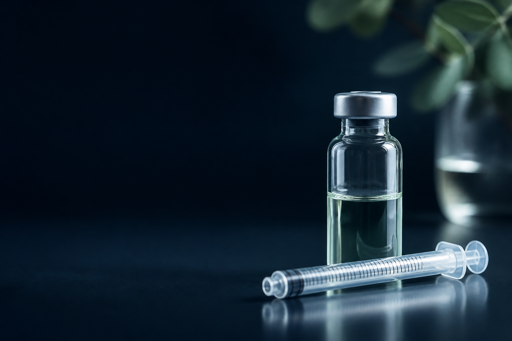

Semaglutide
5 mg vial · 2 mL water
Free, no-sign-up calculator
This peptide calculator turns your vial amount and water volume into a clear U-100 syringe mark — instantly.

Turn your vial numbers into an easy-to-read syringe mark.
Results update as soon as all required values are entered.
Enter all values to calculate.
Ranked for round final volumes and easy-to-read syringe units.
Change any field to compare the matching mL and U-100 syringe mark.
Calculator result
Matching mark: — units
— mL
Suggested volume is based on your vial's peptide amount and a clean U-100 draw. Adjust it to match your vial's instructions.
—
—
—
Result follows the values you entered — confirm your vial strength, water volume, and syringe size before drawing.
Editable examples
Use a preset to see how the peptide calculator fields work together, then edit every value to match the vial in your hand.
5 mg vial · 2 mL water
10 mg vial · 2 mL water
5 mg vial · 2 mL water
5 mg vial · 2.5 mL water
Presets fill the vial and water fields as a math example. Enter the amount you intend to convert — we don't provide dose recommendations.
From your vial label to the right mark on a U-100 syringe — in three steps.
Read the instructions that came with your vial. If they give a water volume or a concentration, switch to Already reconstituted — you'll enter that number in step 2. If no water volume is listed, stay on Not yet reconstituted and the tool will suggest one.
You'll see the units to draw, the matching mL, the concentration, and estimated draws per vial — with a visual syringe guide.
On a U-100 syringe, 1 unit = 0.01 mL.
The calculation follows a fixed order — mg (the peptide) → mL (the liquid) → units (the syringe scale) — so changing an earlier value shifts the mark on your syringe.
Example: 10 mg peptide + 2 mL BAC water
→ concentration = 5 mg/mL
→ 2.5 mg dose = 0.5 mL = 50 units on a 1 mL U-100 syringe
Popular research doses
Commonly referenced research dose ranges for popular peptides, at a glance. Every value below is a research reference — confirm against your own product documentation.
| Peptide | Category | Research dose range | Frequency | Route |
|---|---|---|---|---|
| BPC-157 | Healing & recovery | 200–500 mcg | Daily | SubQ / oral |
| TB-500 | Healing & recovery | 2.5–5 mg | Twice weekly | SubQ |
| CJC-1295 | Muscle & performance | 1–2 mg | 2–3× weekly | SubQ |
| Ipamorelin | Muscle & performance | 200–300 mcg | 2–3× daily | SubQ |
| GHK-Cu | Skin & longevity | 1–2 mg | Daily | Topical / SubQ |
| AOD 9604 | Metabolic | 300–500 mcg | Daily | SubQ |
FDA-approved GLP-1 medications (semaglutide, tirzepatide) are titrated from a low starting dose per their labels — see the full chart.
View the complete peptide dosage chart — 25+ peptides with route, frequency, and source-type labels.
Two dedicated tools for each stage of your vial.
Not sure how much bacteriostatic water to add? This tool walks you through reconstitution — from dry vial to syringe — step by step.
Peptide Reconstitution Calculator →Enter your concentration and target dose to get the exact U-100 syringe units — no mental math.
Peptide Dosage Calculator →More questions? The peptide calculator turns the numbers on your vial into a clear syringe mark.
On a U-100 syringe, convert the amount to milliliters first, then multiply by 100. For a hypothetical concentration of 2,500 mcg/mL, 250 mcg ÷ 2,500 mcg/mL = 0.1 mL; 0.1 mL × 100 = 10 units. Units depend on your specific concentration—use the calculator above with your own values.
First, convert mass when needed: 1 mg = 1,000 mcg. Next, divide the amount in mcg by concentration in mcg/mL to get mL. On a U-100 syringe, multiply mL by 100 to get units. Enter your values into the peptide calculator above to get your specific result.
Divide the total vial amount by the amount you are converting: vial amount (mg) ÷ amount to convert (mg) = theoretical draws. For example, 10 mg ÷ 0.5 mg = 20 draws. Use the amount from your label or qualified professional guidance.
Syringe capacity sets the maximum volume that can be measured in one draw. A 0.3 mL U-100 syringe has a 30-unit scale, a 0.5 mL syringe has a 50-unit scale, and a 1 mL syringe has a 100-unit scale. Smaller-capacity syringes spread the same volume across a shorter scale, which can make small readings easier to distinguish. Choose the smallest syringe that fits your calculated draw volume.
Enter the total peptide amount in the vial and the amount you want to convert. If the vial is already mixed, enter how much water you added; otherwise, the planner shows an editable math setup. Choose the U-100 syringe capacity to see the matching mL and unit mark. Use the numbers from your own vial.
No fixed mg-to-units relationship exists because units reflect volume, and volume changes with concentration. For example, 2.5 mg from a hypothetical 5 mg/mL solution is 0.5 mL, or 50 units on U-100; at 2.5 mg/mL, the same 2.5 mg is 1 mL, or 100 units. Units depend on concentration—use the calculator to get your specific result.
A peptide calculator converts the numbers you enter from a vial into mL and U-100 syringe units. Enter the vial amount, water volume, and amount you want to convert to see the matching mark. For goal-specific guidance, use the instructions that came with your product or speak with a qualified professional.
Disclaimer: For research purposes only. This calculator performs mathematical conversions from values you enter. It does not provide medical advice, dosing recommendations, or default protocol values. All inputs must be confirmed from your own product documentation and verified protocol.